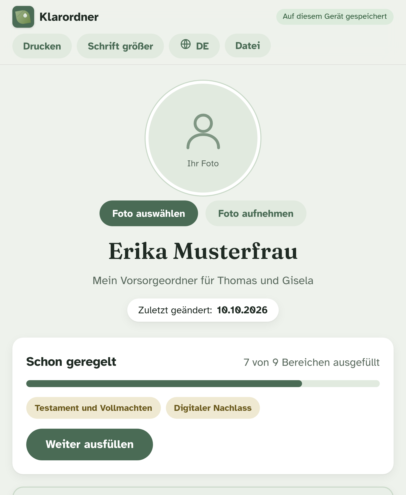
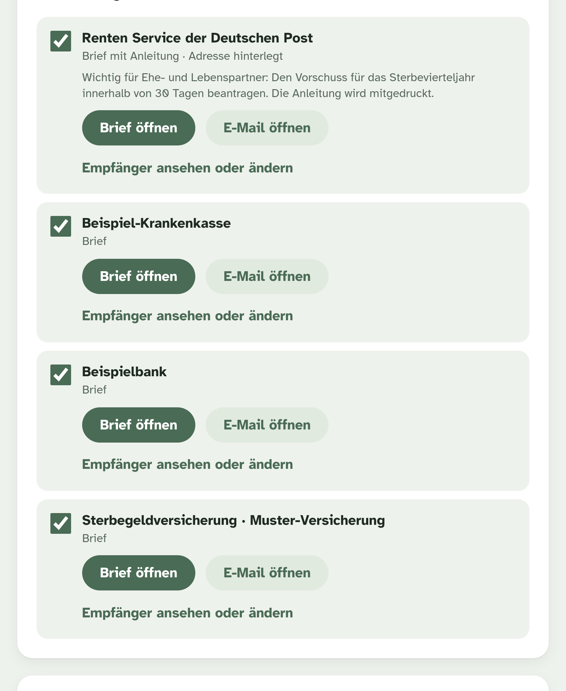
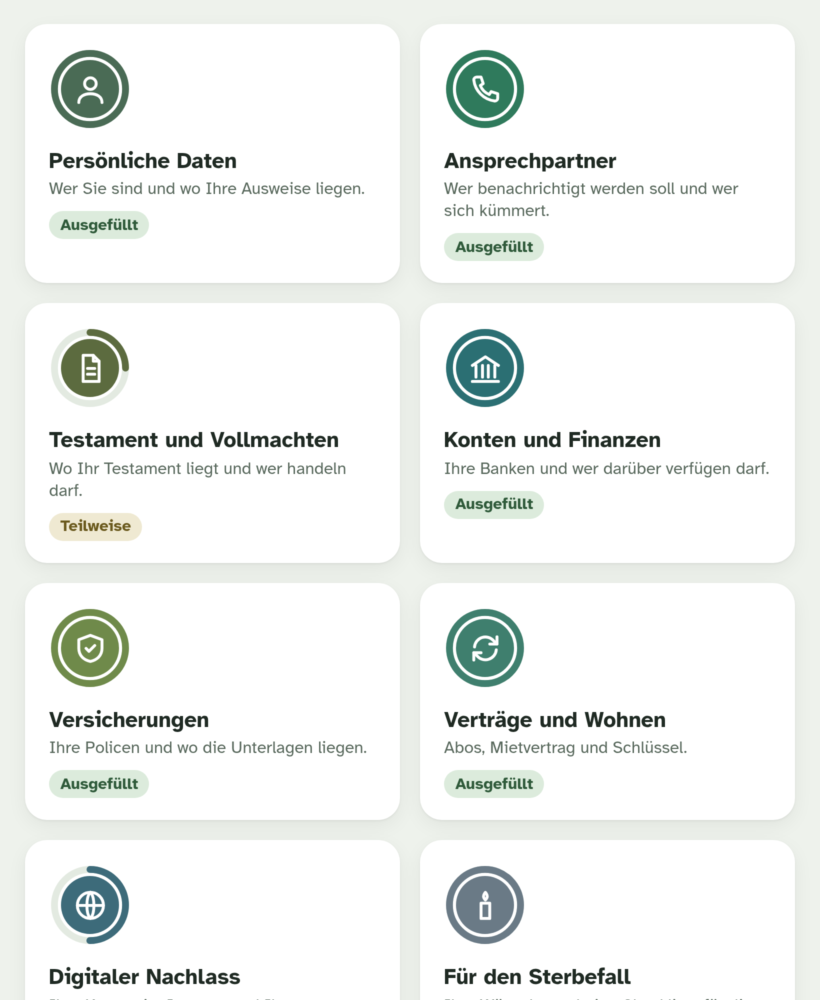

Klarordner führt Sie in neun ruhigen Schritten durch alles, was Ihre Familie nach einem Todesfall braucht: Ausweise, Konten, Verträge, Versicherungen, Wünsche. Fertig vorbereitet, ausgedruckt oder als Datei weitergegeben.
Nach dem Eintragen erhalten Sie sofort unsere Checkliste „Die ersten Tage nach einem Todesfall“ zum Ausdrucken. Kostenlos, ohne Verpflichtung.

Nach einem Todesfall stehen Familien vor hunderten Fragen, meist ohne Antwort. Wo ist das Testament? Welche Versicherung muss binnen 48 Stunden informiert werden? Welche Verträge laufen weiter? Klarordner fragt das alles in Ruhe ab, solange Sie es noch selbst beantworten können.
Wer Sie sind und wo Ausweise, Urkunden und Stammbuch liegen.
Wer benachrichtigt werden soll, wer sich um was kümmert.
Wo die Dokumente liegen, wer handeln darf. Ohne Muster, ohne Rechtsberatung.
Banken, Depots, Vollmachten. Bewusst ohne PIN und Passwörter.
Welche Police eilt, welche nicht. Mit Adressen von 34 Gesellschaften.
Strom, Telefon, Abos, Mietvertrag, Schlüssel. Alles, was gekündigt werden muss.
E-Mail, Handy, soziale Netzwerke. Zugangsdaten verschlüsselt mit eigenem Passwort.
Bestattung, Grabart, Trauerfeier, Haustiere. Und eine Checkliste für die Familie.
Was Sie Ihren Liebsten noch sagen möchten. Als Text oder als Videobotschaft.
Ein Bereich nach dem anderen, in großer Schrift. Sie können jederzeit unterbrechen. Dokumente lassen sich abfotografieren, Klarordner liest die Nummern aus.
Der fertige Ordner wird als PDF gedruckt oder als Datei gesichert. Mit einem Klick sprechen alle Texte Ihre Angehörigen an.
Kündigungen und Mitteilungen an Bank, Versicherung, Rentenservice und Anbieter sind vorausgefüllt. Unterschreiben, Sterbeurkunde beilegen, abschicken.

Angehörige müssen nach einem Todesfall oft zwanzig Briefe schreiben, in den schwersten Wochen ihres Lebens. Klarordner hat sie bereits vorbereitet.

Klarordner ist keine Cloud und kein Online-Dienst. Die App läuft komplett auf Ihrem iPad oder Computer und schickt nichts nach außen, auch nicht an uns.
Klarordner wird gerade fertiggestellt. Tragen Sie sich ein, wenn Sie Bescheid bekommen möchten, sobald es losgeht. Drei kurze Fragen helfen uns, den richtigen Preis zu finden.
Wir melden uns, sobald Klarordner fertig ist. Bis dahin hilft Ihnen vielleicht schon unsere Checkliste.
Nein. Klarordner wird einmal geladen und läuft dann auf Ihrem Gerät, auch ohne Verbindung. Es gibt kein Konto und keinen Server, auf dem Ihre Daten liegen.
Klarordner sichert den Ordner als Datei, die Sie auf einem USB-Stick, bei Ihren Angehörigen oder in Ihrer eigenen Ablage aufbewahren. Diese Datei lässt sich auf jedem anderen Gerät wieder öffnen.
Nein, und das soll es auch nicht. Klarordner hält fest, ob es diese Dokumente gibt und wo sie liegen. Die Dokumente selbst erstellen Sie mit Notar oder Anwalt.
Klarordner wurde für Menschen gemacht, die sich mit Technik nicht beschäftigen wollen. Große Schrift, eine Frage nach der anderen, alles auf Deutsch, ohne Fachbegriffe. Wer ein Formular auf Papier ausfüllen kann, kann auch Klarordner ausfüllen.
Das steht noch nicht fest. Genau deshalb fragen wir Sie oben, was Ihnen Klarordner wert wäre. Geplant ist ein einmaliger Preis ohne Abo.
Eine kurze E-Mail genügt. Die Adresse steht in den Datenschutzhinweisen. Wir löschen Ihre Angaben dann sofort.